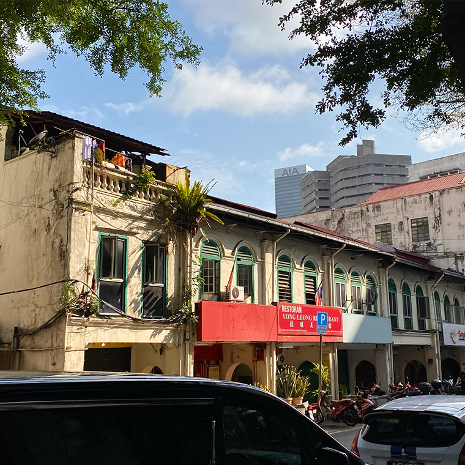
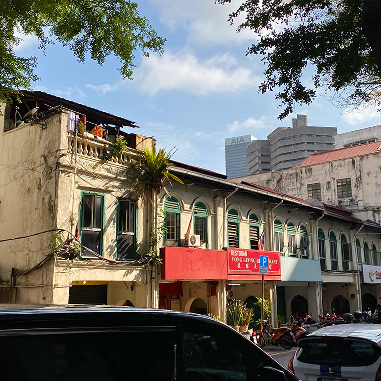

Chilli Pan Mee
Serves 4 | 35 Minutes
Pan mee/ban mian is of Hakka origin. KL (Kuala Lumpur) chili pan mee is a twist from the traditional Chinese ban mian served with soup. Chili pan mee was “invented” by Kin Kin restaurant. The queue is always long and you can top up with the fiery chili paste as much as you want. The flat noodles are tossed in spicy umami sauce made with tons of dried chili, garlic, dried shrimp, and seasonings and then topped with ground meat, poached eggs, and crispy anchovies.

Ingredients
For Minced Pork
- 6 tbsp neutral oil
- 20-30 good quality dried ikan bilis
- 1 brown onion diced
- 3 cloves garlic finely diced
- 600 g minced pork
- 2 tbsp soy sauce
- 2 tbsp cooking caramel
- ¼-½ tsp five spice powder to taste
To assemble
- 1 500g pack of fresh wheat noodles
- handful baby spinach
- to taste Tean's Gourmet Crispy Prawn Chilli
- 4 eggs
Instructions
For Minced Pork
- Heat oil in a frypan over medium heat. When hot, add the ikan bilis and fry until golden and crispy. Drain the ikan bilis on kitchen paper and set aside.
- Drain excess oil, leaving approximately 2tbsp in the frypan. Cook onion and garlic for 3-4 minutes until softened, then add pork and continue to cook until all the pork is cooked through.
- Add soy sauce, cooking caramel and five spice powder and continue to cook. After 5 minutes, turn the heat to low and allow to continue cooking until all the liquid has evaporated and the pork mince has turned a dark colour.
To assemble
- While the pork is cooking, prepare the remaining ingredients.
- Bring a large saucepan of water to the boil and cook the wheat noodles according to packed instructions. It will tend to boil over so keep an eye on the pot - I find stirring and skimming off the scum helps to keep it from boiling over.
- Remove noodles from boiling water (keep the water in the pot) and place into a colander. Rinse with cold water.
- Using the same water in the pot, quickly blanch the baby spinach until just wilted - about 10-20 seconds.
- Remove the baby spinach from boiling water, refresh in some cold water and set aside.
- Lastly, tip out half the noodle water and bring the water back to a boil. Stir to create a whirlpool and drop the eggs into the middle, one at a time, for two minutes each.
- Assemble the chilli pan mee by placing a portion of noodles in a bowl. Top with wilted baby spinach, cooked mince pork, fried anchovies, poached egg and enough crispy chilli to taste. Serve immediately.
Gallery


 


Sources
- What To Cook Today provides a relatively easy recipe that hits all the main parts of a chili pan mee. The recipe is authentic and has a lot of photos that showcase the process. The only issue is that they do not use the traditional flat noodles.
- Marion's Kitchen has a recipe that is very detailed and provides cleaer instructions on how to create each part. However, they include componenets that aren't seen in traditional pan mee.
- A Kitchen Cat has a long explanation about the history and comfort of a bowl of chili pan mee. The recipe is also simple and straightforward without any extra flairs.
Style Inspo
- DONÜTS is website that well showcases the product and leads you smoothly to each part of the website.
- Half-Baked Harvest has wonderful photography of their dishes and closely explains each step. Thye include photos, reviews, similar recipes, and a contact card at the end.
- The Frans Hals Museum displays a website that presents the information in well shaped boxes and sections so that everything is easily consumable by the audience.
Peer feedback: "https://docs.google.com/document/d/1mC1Tp3bIEGeCls67SQTK4dEAJhzgAqOVXW7D-A0OK7E/edit?usp=sharing"